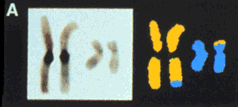
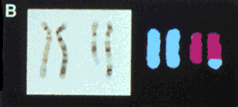
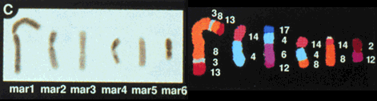
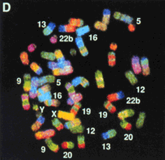
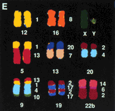

New Methods for Karyotyping
Applications of the technology
|  | |
| Chromosomes from the father of a retarded child. The conventional chromosome picture doesn't show any change, but the spectrally classified chromosomes show that a portion of chromosome 11 (blue) has been transfered to chromosome 1(yellow). |  |
| Chromosomes from a patient with ataxia showing transfer of chromosome 4 material to chromosome 12. | |
|  | |
| Analyses of chromosomes from human breast cancer cells show multiple chromosomes alterations. Analyses of changes may allow predictions of disease severity and also be used to direct cancer therapy. | |
|  |  |
| Applications of human DNA probes to chromosomes from a gibbon ape . While there are great similarities in genes, the organization of the chromosomes are very different as shown by the banding patterns. | |
The techniques permit identifications of chromosomal abnormalities and should be useful for human studies, including genetic diseases and cancer. These techniques could also be automated for rapid screening of human populations. Since currently around 400,000 diagnostic karyotypes are performed each year, there is widespread potential for application. Also, they can be applied to evolutionary research, detecting slighter differences in various species over time.


http://biology.arizona.edu
All contents copyright © 1996. All rights reserved.